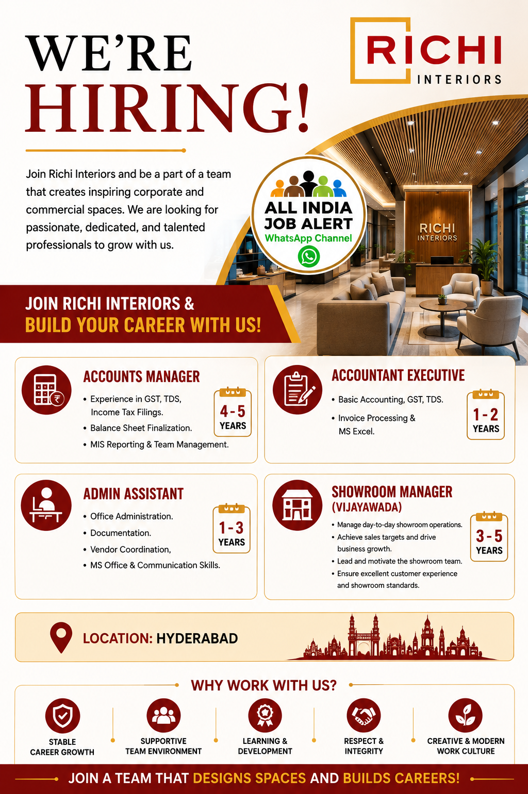

Richi Interiors has announced multiple career opportunities for experienced and talented professionals. The current openings include Accounts Manager, Accountant Executive, Admin Assistant and Showroom Manager. The main location mentioned in the recruitment information is Hyderabad, Telangana, with the Showroom Manager position listed for Vijayawada.

Richi Interiors is looking for passionate, dedicated and talented professionals to join its growing team. The company works in the corporate and commercial interior space and is seeking candidates who can contribute to its operations, customer management, accounts, administration and showroom activities.
Candidates with relevant industry experience should carefully check the requirements of the position before applying. Applicants are advised to prepare an updated resume containing their educational qualifications, previous employment details, relevant skills and responsibilities.
The Accounts Manager position is suitable for experienced accounting professionals who have practical knowledge of financial and statutory activities.
The Accountant Executive position is suitable for candidates with basic accounting and office-finance experience.
The Admin Assistant role is suitable for candidates with experience in office administration and coordination.
The Showroom Manager position requires professionals who can manage day-to-day showroom operations and coordinate with customers and the showroom team.
The recruitment information mentions Hyderabad, Telangana as the main location. The Showroom Manager vacancy is mentioned for Vijayawada. Candidates should verify the exact location and position before applying.
Candidates should have relevant educational qualifications and professional experience according to the position they are applying for. Experienced accounts professionals with knowledge of GST, TDS, Income Tax, MIS and financial reporting may consider the Accounts Manager position.
Candidates with accounting, invoice processing, Excel and statutory-work experience can consider the Accountant Executive vacancy. Professionals with office administration, documentation, vendor coordination and communication skills may consider the Admin Assistant position.
Candidates having showroom management, customer handling, sales coordination and team-management experience may consider the Showroom Manager opportunity.
Candidates should prepare an updated and professional resume before applying. The resume should clearly mention the candidate's name, professional experience, educational qualifications, technical skills, previous company details and major responsibilities.
Accounts professionals should highlight GST, TDS, Income Tax, MIS, balance-sheet finalization and accounting software experience where applicable. Accountant Executive candidates should highlight invoicing, Excel, accounting and documentation experience.
Admin Assistant candidates should highlight office administration, documentation, vendor coordination, communication and MS Office skills. Showroom Manager candidates should mention customer management, sales performance, team leadership and showroom operations experience.
The interior and commercial fit-out industry provides opportunities across multiple professional departments. Employees can gain practical exposure to customer management, business operations, financial processes, administration and team coordination.
Professionals who are looking for career growth should carefully compare the responsibilities of each position with their own experience and qualifications. Applying for a role that closely matches your experience can help you present your profile more effectively during the recruitment process.
Interested candidates should review the recruitment poster and follow the application instructions provided by the employer. Candidates should select the position that matches their qualifications and experience and submit their updated resume according to the employer's recruitment process.
Before sharing personal documents, candidates should independently verify the latest vacancy information. Job seekers should never pay an unknown person for a guaranteed job or selection.
If your qualification and experience match any of the listed positions, prepare your updated CV and apply according to the employer's latest instructions.
The recruitment information lists Accounts Manager, Accountant Executive, Admin Assistant and Showroom Manager positions.
The main location mentioned is Hyderabad, Telangana. The Showroom Manager position is mentioned for Vijayawada.
The listed positions generally mention experience requirements. Candidates should check the specific requirement for the position before applying.
Candidates should keep an updated resume containing accurate educational and professional information and follow the employer's stated application instructions.
This article is published for job-information and awareness purposes. Vacancy details, eligibility, locations and recruitment instructions may change. Candidates should verify the latest information directly with the employer before sharing personal documents or making any payment.